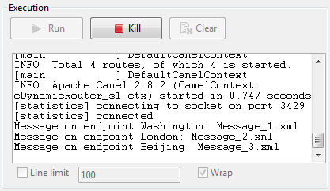

|
Famille de composant |
Routing | |
|
Fonction |
Le composant cDynamicRouter vous permet de déterminer le chemin des messages de manière dynamique indépendamment des destinations possibles. | |
|
Objectif |
Le cDynamicRouter est utilisé pour router un message ou des messages vers différents endpoints selon des conditions spécifiées. | |
|
Basic settings |
Bean class |
Saisissez le nom de la classe du bean à utiliser pour le routeur dynamique. |
|
Specify the method | Cochez cette case pour spécifier la méthode à utiliser, définie dans la classe du bean. | |
|
Ignore Invalid Endpoints |
Cochez cette case pour ignorer les URI de l'endpoint qui ne sont pas résolus. Décochez cette case pour générer une exception lorsque les URI de l'endpoint sont invalides. | |
|
Utilisation |
Le cDynamicRouter est utilisé comme composant intermédiaire ou de fin dans une Route. | |
|
Limitation |
n/a | |
Dans ce scénario, trois fichiers de messages contenant des informations concernant des personnes sont routés vers différents endpoints selon le nom de ville qu'ils contiennent.
Les exemples ci-dessous sont des extraits de fichiers XML d'exemple utilisés dans ce scénario :
Message_1.xml:
<person> <firstName>Ellen</firstName> <lastName>Ripley</lastName> <city>Washington</city> </person>
Message_2.xml:
<person> <firstName>Peter</firstName> <lastName>Green</lastName> <city>London</city> </person>
Message_3.xml:
<person> <firstName>Alice</firstName> <lastName>Yang</lastName> <city>Beijing</city> </person>
Un bean Java prédéfini, setDynaURI, est appelé dans ce scénario pour retourner les URIs des endpoints selon le nom de ville contenu dans chaque message. Par exemple, le message contenant le nom de la ville de Washington, il sera routé vers l'endpoint Washington.
Pour plus d'informations concernant la création et l'utilisation de Beans Java, consultez le Guide Utilisateur de Talend Open Studio for ESB.
package beans;
import org.apache.camel.Exchange;
import org.apache.camel.Header;
import org.w3c.dom.Document;
import org.w3c.dom.Element;
import org.w3c.dom.NodeList;
public class setDynaURI {
public String setURI(Document document,
@Header(Exchange.SLIP_ENDPOINT) String previous) {
if(previous!=null){
return null;
}
NodeList cities = document.getDocumentElement().getElementsByTagName(
"city");
Element city = (Element) cities.item(0);
String textContent = city.getTextContent();
return "direct:"+textContent;
}
}

Dans la Palette, développez le dossier Messaging et déposez un composant cFile et trois cMessagingEndpoint dans l'espace de modélisation graphique.
Développez le dossier Routing et déposez un composant cDynamicRouter dans l'espace de modélisation graphique.
Développez le dossier Processor et déposez trois cProcessor dans l'espace de modélisation graphique.
Nommez les composants comme vous le souhaitez afin de mieux identifier leur fonctionnalité.
Cliquez-droit sur le composant cFile, sélectionnez Row > Route dans le menu contextuel et cliquez sur le composant cDynamicRouter.
Répétez cette opération afin de connecter les composants cMessagingEndpoint aux cProcessor.
Double-cliquez sur le composant d'entrée cFile pour afficher sa vue Basic settings et configurer ses propriétés.
Dans ce scénario, spécifiez simplement le chemin d'accès au fichier d'entrée et laissez les autres paramètres tels qu'ils sont.

Double-cliquez sur le cDynamicRouter pour afficher sa vue Basic settings dans l'onglet Component.
Dans le champ Bean class, saisissez le nom du bean Java prédéfini. Laissez la case Specify the method décochée, puisqu'il n'y a qu'une méthode dans le bean Java et laissez la case Ignore Invalid Endpoints décochée si vous souhaitez que le composant génère une exception si l'URI de l'endpoint est invalide.

Double-cliquez sur le premier composant cMessagingEndpoint nommé Washington, pour afficher sa vue Basic settings et saisissez l'URI de destination dans le champ URI pour votre message.
L'objectif est d'utiliser ce composant pour récupérer le message routé vers l'URI direct:Washington, comme ci-dessous.

Répétez cette étape afin de configurer les URIs des endpoints pour les deux autres composants cMessagingEndpoint : direct:London et direct:Beijing respectivement.
Double-cliquez sur le premier cProcessor nommé Monitor_Washington pour afficher sa vue Basic settings dans l'onglet Component.

Dans la zone Code, personnalisez le code pour afficher dans la console le nom du fichier du message routé vers l'endpoint Washington.
System.out.println("Message on endpoint Washington: "+ exchange.getIn().getHeader("CamelFileName"));Répétez ces étapes pour configurer les deux autres composants cProcessor et afficher le nom des fichiers des messages routés vers les endpoints London et Beijing respectivement.
Appuyez sur Ctrl+S pour sauvegarder votre Route.
Cliquez sur l'onglet Code au bas de l'espace de modélisation graphique pour visualiser le code généré.

Comme affiché dans le code, le message entrant de (
from) l'endpointMessage_sourceest routé par le.dynamicRoutervers les URIs des endpoints dynamiquement configurées, selonbeans.setDynaURI.class.Cliquez sur la vue Run pour l'afficher et cliquez sur le bouton Run pour lancer l'exécution de votre Route.
Vous pouvez également appuyer sur F6 pour l'exécuter.
Résultat : Les messages source sont routés vers différents endpoints, selon le nom des villes contenus dans les messages.
